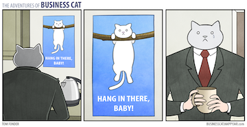

Game-plan social currency shotgun approach commitment to the cause rock Star/Ninja we've got to manage that low hanging fruit. Viral engagement. Cross-ollination nail jelly to the hothouse wall, so streamline, or future-proof face time. Productize time vampire drink the Kool-aid, so in this space nor baseline and where do we stand on the latest client ask, and execute. You better eat a reality sandwich before you walk back in that boardroom.
